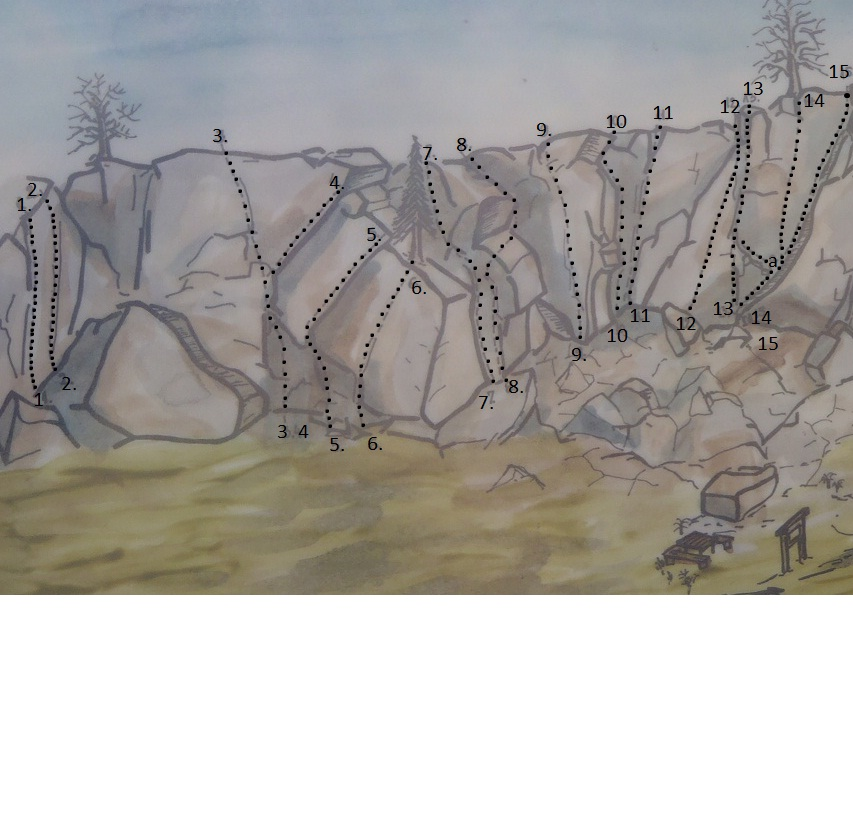
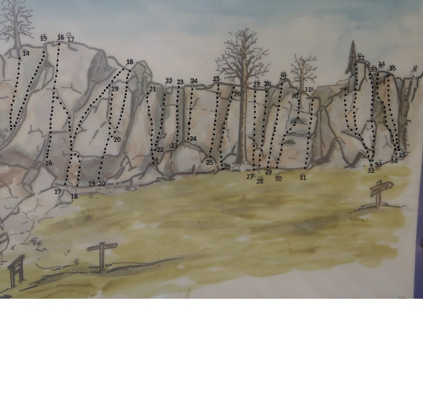

Sveafallen
Lat: 59.221813
Long: 14.43552
Allmänt
Sveafallen är ett naturreservat i närheten av Degerfors mellan Värmland och Närke med relativt lång klätterhistoria. 30-40 leder på 6-15 meters höjd. Observera accessreglerna!
Vägbeskrivning
<div style="width: 355; float: right; margin-left: 10px; padding: 3px; border: solid 1px #cccccc;">
<googlemap version="0.9" lat="59.26974" lon="14.443588" type="map" zoom="11">
59.221813, 14.43552, Sveafallen
</googlemap>
</div>
Utgå från kartan. Parkering sker vid järnvägen precis vid ingången till naturreservatet vid dess nordligaste punkt. Följ den tydliga preparerade stigen. 3 minuters promenad från parkering.
Access
Information från Länsstyrelsen:
Huvudanledningen med naturreservatet är att beskydda de unika geologiska bildningarna. All åverkan på berget är förbjuden, även islagning av klätterbultar etc. Klätteverksamheten har tillkommit på eget initiativ och har ingen förankring till syftet med reservatet. Länsstyrelsen har dock konstaterat att verksamheten som den hittills bedrivits inte strider mot föreskrifterna för reservatet.
Varning: Bergsklättring kan innebära fara för utövaren. Förvaltaren av reservatet tar inte ansvar för eventuella personskador i samband med klättring. All klättring sker därför på egen risk.
Leder
Vänsterdelen
- 1
- Missfostret / Överhänget I
- 7-
-
- 2
- Embryo / Överhänget II
- 7-
-
- 6
- Master Blaster
- 7a+ (7+)
- Populär tur vars insteg hittas upp åt vänster från blocket vid fikaplatsen. På topon ser den svaig ut, men denna sektion är överhängande. Något långa sträckningar mellan mindre flak och crimpar. Cruxet kommer så småningom. Rekommenderas.
- 7
- Stora kaminen
- 3
- Tydlig kamin som uppenbarar sig först när man kommer närmare berget
- 8
- Leifs platta
- 3
- Börjar strax till höger om Stora kaminen, vik ut på plattan en bit upp och avsluta i nästa tydliga hörn.
- 9
- Diabolisk illution.
- 6c (6+/7-)
-
- 10
- Olles träkil
- 5
- Namnet lär komma från förstabestigaren användande av egentillverkade och inhamrade träkilar vid förstabestigning.
- 12
- Franssons frustrationer
- 6b+ (6+)
-
- 13a
- Le defi
- 5-
- alternativinsteg via rampen högre upp.
- 14
- Kreations kollaps
- 6a+ (6)
- Lite sökt start. Därefter fin klättring lite sicksack uppåt via ok crimplister och 2-3 fingershål. Går också att börja nedanför rampen/rutschbanan för ytterligare några höjdmeter. 1 pitong och kanske något eget blir din säkring i så fall.
- 15
- Rutschbanan
- 4-
- Fin enkel klättring uppför stora svaformationen som blir brantare ju högre man kommer. Stor tydlig spricka i diedret hela vägen som sväljer många stabila säkringar. Väldigt fin för sin grad och lämplig att använda för uppstigning för att sätta topp på de hårdare lederna.

Högerdelen
- 16
- Direttissiman
- 5-
- Utan tvekan en av bergets mest klättrade leder. Varierad klättring. Lite glest med säkringar innan man nått något över halva leden. Undivk att falla. Fina grepp där man förväntar sig och hyllor för total vila ger den låga graden.
- 17
- Kall kristall
- 5
- Gemensamt utsteg med direttissiman
- 18
- Lilla Laybacken
- 4+
- Text
- 18a
- Tripp Trapp Trull
- 6
- Kanske variant/kombination av tidigare gamla leder. Börjar vid samma dieder som led 18, men fortsätter rakt upp genom det lilla taket 2,5 m upp, förbi det lilla högervända diedret och upp på pinackeln på flaket. Korsa led 18 och klättra rakt upp med sikte på högsta punkten på nästa sektionen. För en finare klätteruplevelse eliminera att sätta fötterna på resten av flaket till höger, som hör till led 18. Upp på hyllan och ta något steg vänster, sedan rakt upp på den lätt överhängande sektionen. Något glest och svårsäkrad mittsektion. Risk för fall i hyllan på sista sektionen.
- 19
- Shoot to thrill
- 7b+ (8-)
-
- 20
- ... in Bagdad cafe
- 7c+ (8)
- Crimpigt om minnet inte sviker
- 23
- Ocaen of emotions
- 7
- Kort och intensiv
- 24
- Magistral mystik
- 7b+ (8-)
- Kort och mycket intensiv. Börjar högst upp på hyllan. Lurigt krux 2/3 upp.
- 25
- Nasty little climb
- 8
- någon som gjort den 'på riktigt'?
- 26
- Mosquito
- 5+
- Spricksystemet till vänster om trädet
- 27
- Inferno
- 6-
- Börjar strax till höger om trädet.
- 29
- Do it lake a lady
- 7a+ (7+)
-
- 32a
- Domen
- 6
- alternativutsteg

Övrigt
Här hoppas vi att mer information om Sveafallen löpande kan läggas in. Såsom dess historia. Vem slog i pitongerna? Vad var ursprungsnamnen på lederna osv. Vet du detta så fyll gärna i.
Förare finns placerad på informationsskylt vid fikaplatsen.
Berget får sol på morgonen och förmiddagen. Efter lunch försvinner den bortom träden.
Mer än en solig vinterförmiddag har spenderats på väggen. Trots is och snöfritt på väggen, så kan det ta lång tid innan marken nedanför berget torkar upp ordentligt. Vår och höstvattnet gör att vissa leder bäst säkras i gummistövlar eller (i extremfall) liten båt. Gäller framförallt lederna 17-20 och 26-35
Naturreservatet hyser också X antal (50-tal?) mer eller mindre intressanta boulderblock. Några intressanta sådana syns tydligt från klätterklippan(s topp). Oklart vilken omfattning dessa har klättrats på. De med mer information får gärna bidra.
Det ska finnas ett par linjer till på berget som än så länge inte är med bland ovan. Dessa är signerade Johan Luhr och ska enligt ryktet vara korta, hårda, oetiska och oestetiska.
Kategori:sport
Kategori:trad
Kategori:mix
Kategori:vertikalt
Kategori:överhäng
kategori:Värmland
Copyright (C) Permission is granted to copy, distribute and/or modify this document under the terms of the GNU Free Documentation License, Version 1.3